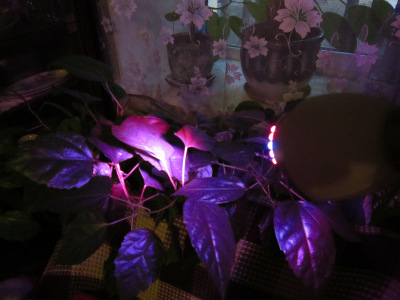
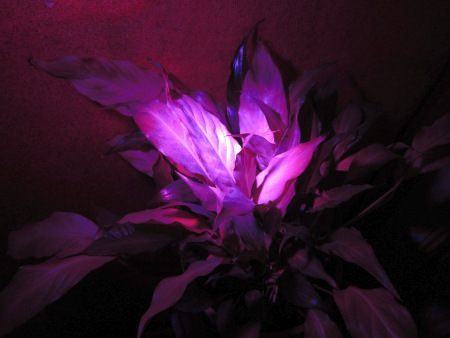
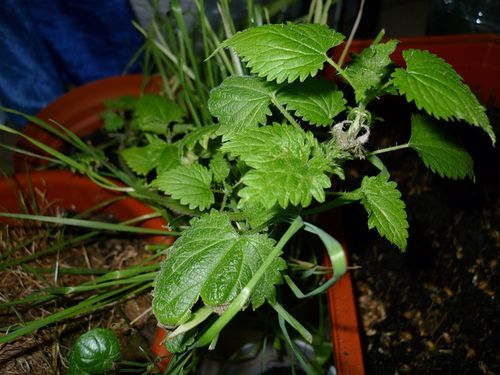
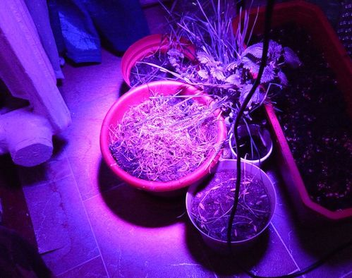

Отзывы клиентов
Мнения покупателей о наших фитолампах
Вы можете прислать свой отзыв и фотографию вашего домашнего цветка на наш почтовый ящик info@fitolampy.ru с пометкой "отзыв".
Также вы можете оставить отзыв, воспользовавшись формой ниже. Пожалуйста, укажите своё имя и контактный телефон.
Оставив развернутый отзыв, который будет полезен посетителям сайта, вы получите дополнительную скидку 5% на следующую покупку.
Уважаемые покупатели, особенно те, кто возвращается во второй и третий раз за дополнительными лампами, пожалуйста, не стесняйтесь присылать отзывы о своём опыте!
Приобрела в вашем магазине маленькую фитолампу, направила на свою домашнюю розу, живём на втором этаже, у нас деревья весь свет заслоняют. Всю зиму лампочка освещала одну ветку, теперь на этой ветке листьев стало гораздо больше, чем было! По нескольку часов на день. Недавно роза даже зацвела в первый раз (не успели цветок сфотографировать). Лампочкой довольны.

Поставили под лампу увядающий цветок "Женское счастье" (муж засушил, пока в отпуск ездили с дочкой). Ожило наше счастье, зазеленело и выпустило новые листья!

Я делала в вашем магазине заказ на фитолампы и осталась очень довольна. Мой выбор пал именно на ваш магазин Фитолампы.ру, т.к меня порадовал выбор светодиодных ламп для растений. Я сначала приценивалась, но когда у вас началась акция со скидками, с удовольствием приобрела. Брала лампы на пробу, я осталась довольна. Главное, мой фикус остался доволен. Буду брать ещё. Ваш магазин у меня добавлен в закладках. Цены на лампы у вас сравнительно низкие, но всё что бы я хотела, сразу не приобрести, поэтому буду постепенно покупать. Спасибо, удачной вам торговли!
В нашей квартире все окна северные, поэтому фитолампа очень помогает мне в уходе за моими орхидеями! Обязательно буду покупать ещё, но на этот раз для рассады на огород. Фотографии с фитолампой пришлю Вам позже.
Светодиодные лампы для цветов "Ялта" моим растениям нравятся. Брал три. Лампы были постоянно включены и работали без отдыха все январские выходные. У меня освещают хризалидокарпус и куркулиги. Буду покупать ещё.
Купил 10w светодиодную лампу. Очень доволен. Травки растут здорово!
Здравствуйте! В начале октября купил фитолампы для роста растений в вашем магазине. Лампы очень понравились. По началу мне эти лампы показались странными, и относился я к ним весьма скептически. Вроде как на них обычные светодиоды, только красные и синие, с линзами. Не совсем ясно, почему они должны положительно влиять на рост растений... Оказывается, соединение синего света с красным даёт свет, нужный растениям. Получается в общем, цветы думают что на них светит солнце, и от этого начинают расти и зимой когда темно остаются зелёными. Но главное то, что им нравится этот свет. Во всяком случае хуже растениям от него не стало... С лета у меня на подоконнике росла крапива. Её я выкопал на даче с корнями (маленький кустик), привёз домой в одноразовом стаканчике с грунтом и пересадил в горшок... В начале осени пока длина световых дней была ещё приемлемой, крапива держалась хорошо и зеленела. А потом стала желтеть и листья чуть ли не все опали. Потом переболела и дала новые листочки. Далее наступили холода, световые дни сильно укоротились и бедная крапива начала загибаться... И тут, к счастью, я купил фитолампы, и сразу включил одну из них (которая с цоколем E27 и вкручивается в обычный светильник-прищепку, который у меня уже имелся дома). После этого спустя какое-то время включил вторую фитолампу. Сразу крапива ожила и зазеленела так, будто сейчас уже наступила весна... Стоит зелёненькая, симпатичная и даже укусила меня, когда я до неё дотронулся. Это хороший знак. Эффект уже проявился и от одной фитолампы, т.е. стали сразу заметны улучшения в самочувствии крапивы, она воспряла ото сна... А вторая фитолампа полностью её реанимировала, поскольку яркость у неё больше. Помимо крапивы у меня под фитолампами растут и другие растения... Пшеница всходит в 1,5-2 раза быстрее, чем без использования фитоламп...


Оставить отзыв
Поделитесь своим опытом использования фитоламп